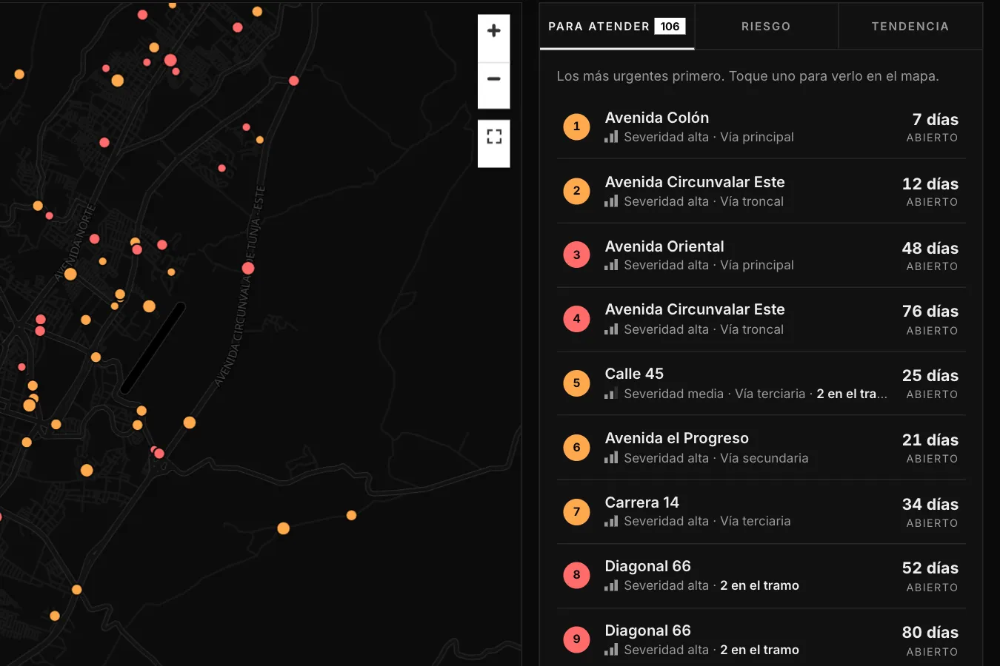
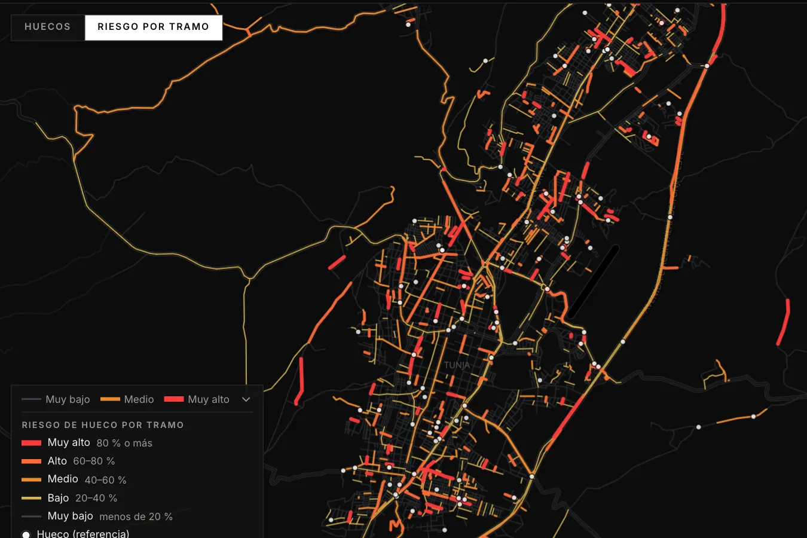
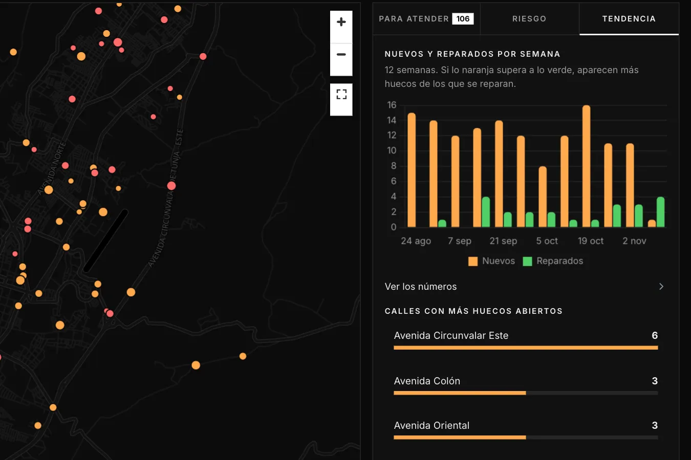

01
Detectar
El acelerómetro y el GPS van en el carro. Cuando la vía da un golpe fuerte (a más de 5 km/h), queda registrado con su lugar y su hora.
Tunja, Boyacá --:-- Prototipo en pruebas
Un sensor a bordo del carro siente cada golpe de la vía. VÍA VIVA lo convierte en un mapa de huecos con su estado y en un pronóstico de qué tramos de calle pueden dañarse.
01
El acelerómetro y el GPS van en el carro. Cuando la vía da un golpe fuerte (a más de 5 km/h), queda registrado con su lugar y su hora.
02
Las detecciones a menos de 10 m se juntan en un solo hueco. El equipo lo verifica en sitio y se registra cuando lo reparan.
03
Un modelo estima, para cada tramo de calle, la probabilidad de que tenga un hueco que nadie ha reportado. Así se sabe por dónde revisar primero.
Tres preguntas, una pantalla

Para atender
Una lista corta, ordenada por prioridad: qué tan fuerte es el golpe, el tipo de vía (principal, secundaria o local) y cuántos huecos hay en la misma cuadra. Cada uno dice cuántos días lleva abierto y cómo llegar.
Ver la lista
Cada cuadra con la probabilidad estimada de tener un hueco que nadie ha reportado. Es una guía para salir a revisar, no una certeza.
Ver el riesgo
Tendencia
Huecos nuevos contra reparados, semana a semana. Si las barras naranjas superan a las verdes, aparecen más huecos de los que se reparan.
Ver la tendenciaCuatro reglas y listo
Detectado (naranja): lo sintió el sensor. Verificado (rojo): alguien lo confirmó en sitio.
Reparado (verde) o descartado (gris): no era un hueco.
Qué tan fuerte fue el golpe más fuerte que se midió ahí.
En el modo «Riesgo», de gris (muy bajo) a rojo (muy alto).
Las calles sobre las que se mide
Calles: OpenStreetMap (ODbL). Barrios: datos abiertos de la Alcaldía de Tunja (CC BY-SA 4.0). Lluvia: IDEAM (CC BY-SA 4.0). Son la base del mapa, no resultados: los huecos y el riesgo están en el tablero.
VÍA VIVA reporta el estado de la vía, no a las personas. A internet solo salen huecos y riesgo por tramo: ni trayectorias, ni fotos, ni datos de quien conduce (Ley 1581 de 2012).
Abierto al público, sin cuenta. VÍA VIVA es un prototipo en pruebas: el software de captura se está enlazando con esta interfaz y, mientras tanto, el tablero muestra datos de prueba. El equipo y la Alcaldía entran con su cuenta.